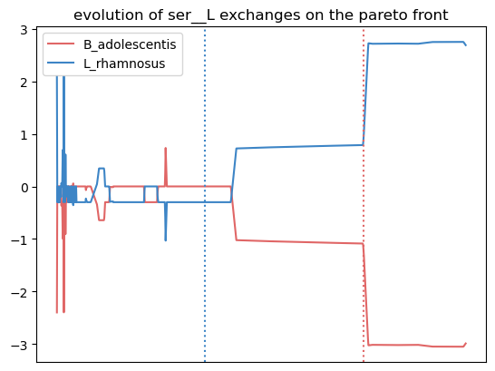
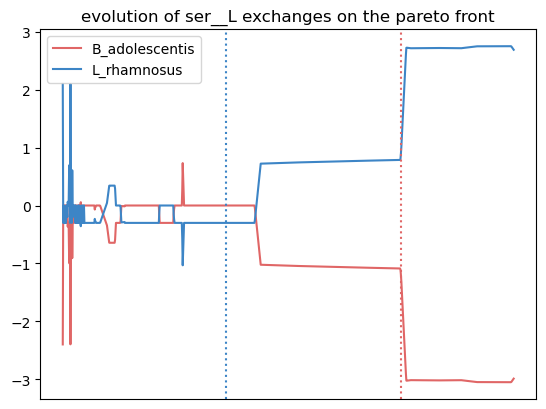

Global usage
MIMEco infers the interaction potential between two organisms using multi-objective metabolic modelling. This requires the user to input their genome-scale metabolic models (GEMs), and a specific medium is highly recommended to model relevant interactions. Here, we will explore an example for a global usage of MIMEco.
Models and medium definition
Models
The two organisms must be inputted as cobrapy models. Cobrapy allows easy import of models of sbml, json, yaml, matlab and pickle formats.
In this example, we import two gut bacteria models: Lactobacillus rhamnosus and Bifidobacterium adolescentis
import cobra
import gurobipy
model1 = cobra.io.read_sbml_model("resources/models/Lactobacillus_rhamnosus_GG_GG_ATCC_53103.xml")
model1.id = "L_rhamnosus"
model2 = cobra.io.read_sbml_model("resources/models/Bifidobacterium_adolescentis_ATCC_15703.xml")
model2.id = "B_adolescentis"
It is better to immediatly change the model’s solvers from glpk to a better one (gurobi, CPLEX or SCIP)
model1.solver = "gurobi"
model2.solver = "gurobi"
Medium
The medium must be inputted in the form of a pandas Series where the index is the medium metabolite identifier, and the corresponding value is the availability of corresponding metabolite in the medium as a positive flux value (float). Here, the medium represents a western diet, corresponding to a dietary intake rich in sugars and fats
import pandas as pd
Western_diet = pd.read_csv("resources/Western_diet_BiGG.csv", index_col = 0)
Western_diet
| Western_diet | |
|---|---|
| adocbl | 1.000000 |
| ala__L | 0.300000 |
| amylose300 | 0.000078 |
| arabinogal | 0.000037 |
| arachd | 0.003867 |
| ... | ... |
| ttdca | 0.079798 |
| tyr__L | 0.099000 |
| val__L | 0.180000 |
| vitd3 | 1.000000 |
| zn2 | 1.000000 |
90 rows × 1 columns
If no medium is inputted, then the exchange reactions bounds will stay as in the inputted model's initial settings, which are highly unconstrained if you did not modify the model beforehand.
Undescribed metabolites constraint
print(len(model1.exchanges))
print(len(model2.exchanges))
163
119
L. rhamnosus has 163 exchange reactions, which means we can control the appearance of 163 metabolites in the external medium of the model. For B. adolescentis, we have 119 exchange reactions. However, our Western diet only defines the appearance flux of 90 metabolites. All of the exchange metabolites present in the models, but not defined by the medium are “undescribed metabolites”.
The undescribed_metabolites_constraint argument enables to chose the level of constraint applied to these metabolites, among the following options:
"blocked": All undefined metabolites lower bounds are set to 0, blocking their appearance in the medium. This is the ideal option, as it only allows the bacteria to grow and interact on your designed medium.
"partially_constrained": It can be tricky to define a medium that enables both organisms to grow inblockedconditions. Often, slightly unconstraining the undescribed metabolites appearance can help while still yielding medium-dependant results. This options allows a non-zero lower bound for undescribed metabolites. It is set as “-1” by default, but this lower_bound value can be personnalized through the optionundescribed_met_lb
“as_is”: In this case, the lower bound of undescribed metabolites exchange reactions stays the same as in the inputted model. This is usually highly unconstrained.
Metabolic interaction inference
Let’s infer the interaction score and type between L. rhamnosus and B. adolescentis with the function interaction_score_and_type()
from mimeco import analysis
int_score, int_type = analysis.interaction_score_and_type(model1, model2, Western_diet,
undescribed_metabolites_constraint="partially constrained")
print("interaction score: ",int_score)
print("interaction type: ",int_type)
nb of bounds modified by medium : 46
(0, 1261)
(1, 2285)
/tmp/tmptcqcb3we
interaction score: 13.852285692407088
interaction type: favors model1
This analysis predicts that the presence of B. adolescentis (model2) is
beneficial to L. rhamnosus’s (model1) growth in a pairwise ecosystem
exposed to a Western diet. To better understand this result, it is
possible to plot the Pareto front with the argument plot = True:
int_score, int_type = analysis.interaction_score_and_type(model1, model2, Western_diet,
undescribed_metabolites_constraint="partially constrained",
plot = True)
nb of bounds modified by medium : 46
(0, 1261)
(1, 2285)
/tmp/tmpgd4f6mjp
L. rhamnosus is highly benefitting from B. adolescentis presence. What metabolic exchanges could explain this ?
Exchanged metabolites inference
The function crossfed_metabolites() identifies crossfed metabolites. This analysis is based on the metabolic phenotypes infered through a sampling of the Pareto front.
Crossfed metabolites are metabolites that are secreted by one organism and uptaken by the other in a given proportion
of the metabolic phenotypes. Their transport reactions' fluxes are correlated with model2's biomass objective value.
In a nutshell, these are metablites that are exchanged between organisms, and this exchange impacts model2’s fitness.
This analysis requires more data from the user, and is more time consuming. This function also
takes model1, model2, medium and undescribed_metabolites_constraint as arguments. It also needs:
solver: The solver you are using.
model1_biomass_id: ID of the reaction used as objective in model1 (if the objective coefficient is not null for several reactions, then a new reaction must be built to constrain the model to a given objective value through its flux)
model2_biomass_id
model1_biomass_id = "Growth"
model2_biomass_id = "Growth"
potential_exchange = analysis.crossfed_metabolites(model1 = model1, model2 = model2, medium = Western_diet, undescribed_metabolites_constraint = "partially_constrained",
solver = "gurobi", model1_biomass_id = model1_biomass_id, model2_biomass_id = model2_biomass_id)
potential_exchange
nb of bounds modified by medium : 185
(0, 1261)
(1, 2285)
/tmp/tmpotd0tq9f
{'ser__L': [0.961038961038961, 0.961038961038961, 0.0]}
The function returns the potential_exchange dictionnary. Its keys are identified
crossfed metabolites. The values are lists of three elements:
The proportion of metabolic phenotypes on the Pareto front in which these metabolites are echanged
The proportion of metabolic phenotypes where the exchange goes from model1 to model2
The proportion of metabolic phenotypes where the exchange goes from model2 to model1
This enables to identify crossfed metabolites, the frequence of this exchange on the Pareto front, and its direction. Here, serine is exchanged in 96% of the metabolic phenotypes highlighted by the Pareto front, and this exchange goes from L. rhamnosus to B. adolescentis.
To better explore the evolution of these crossfed metabolites transport along the Pareto front, a plotting function is included as on option:
potential_exchange = analysis.crossfed_metabolites(model1 = model1, model2 = model2, medium = Western_diet, undescribed_metabolites_constraint = "partially_constrained",
solver = "gurobi", model1_biomass_id = model1_biomass_id, model2_biomass_id = model2_biomass_id, plot = True)
nb of bounds modified by medium : 185
(0, 1261)
(1, 2285)
/tmp/tmp36mfkens
<Figure size 640x480 with 0 Axes>
In this plot, the transport flux of serine in and out of model1 (L. rhamnosus) is represented in red. The x axis is the parsing of the Pareto front. Horizontal dotted lines mark the point on the Pareto with the highest objective value for the corresponding organism. Finally, a positive flux value represents the secretion of the metabolite, and a negative value represents an uptake. In this example, L. rhamnosus secretes serine, which is uptaken at a corresponding rate by B. adolescentis. This is the case at both objective value’s optimum.
Now, this analysis identifies crossfed metabolites associated with the fitness of model2. Let’s repeat the process by exchanging model1 and model2 in the arguments of the function:
potential_exchange2 = analysis.crossfed_metabolites(model1 = model2, model2 = model1, medium = Western_diet, undescribed_metabolites_constraint = "partially_constrained",
solver = "gurobi", model1_biomass_id = model1_biomass_id, model2_biomass_id = model2_biomass_id, plot = True)
nb of bounds modified by medium : 185
(0, 1022)
(1, 2285)
/tmp/tmp59cjlt14
/home/anna/.local/lib/python3.10/site-packages/cobra/util/solver.py:554: UserWarning: Solver status is 'infeasible'.
warn(f"Solver status is '{status}'.", UserWarning)
<Figure size 640x480 with 0 Axes>
Here, we observe that the growth of L. rhamnosus is favored by the crossfeeding of amonium and phenylalanine from B. adolescentis.
Options to calibrate the analysis
The crossfed metabolites analysis is based on the sampling of metabolic
phenotypes on the Pareto front. By default, 1000 metabolic phenotypes
are sampled, but it can be changed using the optional argument
sample_size.
The selection of crossfed metabolites (CM) can be personnalized. The exact criteria, and their modulable options are:
The fluxes of the CM transport reactions for the two organisms are anti-correlated.
By default, the anti-correlation must be superior or equal to 0.5. This can be changed using the optionnal argument
exchange_correlation.The fluxes of the CM transport reactions for the two organisms are correlated with model2 biomass production.
By default, a minimal correlation value is set to 0.8. This can be changed using the optional argument
biomass_correlation.The reactions yield opposite sign for a given proportion of solutions.
By default, the minimal proportion of metabolic phenotypes where transport reactions yield opposite sign is set to 0.3. This can be changed using the optionnal argument
lower_exchange_proportion.
Let’s to see if the results change when largely unconstraining these parameters:
potential_exchange2 = analysis.crossfed_metabolites(model1 = model2, model2 = model1, medium = Western_diet, undescribed_metabolites_constraint = "partially_constrained",
solver = "gurobi", model1_biomass_id = model1_biomass_id, model2_biomass_id = model2_biomass_id,
exchange_correlation = 0.3, biomass_correlation = 0.6, lower_exchange_proportion = 0.1, plot = True)
potential_exchange2
nb of bounds modified by medium : 185
(0, 1022)
(1, 2285)
/tmp/tmpts0_4wlj
 


{'leu__L': [0.7962037962037962, 0.7962037962037962, 0.0],
'nh4': [0.7262737262737263, 0.7262737262737263, 0.0],
'ser__L': [0.6043956043956044, 0.005994005994005994, 0.5984015984015985],
'phe__L': [0.5484515484515484, 0.5484515484515484, 0.0]}
<Figure size 640x480 with 0 Axes>
We observe more crossfed metabolites (leucine and serine), but as the criteria were less stringent, their exchange is less clearI It still holds potential, especifically at optimal growth values.
Extracting data to do further analysis
It is possible to extract data generated by the sampling of the Pareto
front to freely analyze the metabolic behaviors of the pairwize
ecosystem. In this case, the crossfed_metabolites() function returns
both the potential_crossfeeding dictionnary and the
sampling_data pandas dataframe. The optional argument
``retrieve_data can be set to:
“all”, where the whole sampling matrix is returned in a second variable.
“selection” where the a pandas dataframe of the sampling of selected crossfed metabolites transport reactions and both organisms biomass reactions is returned.